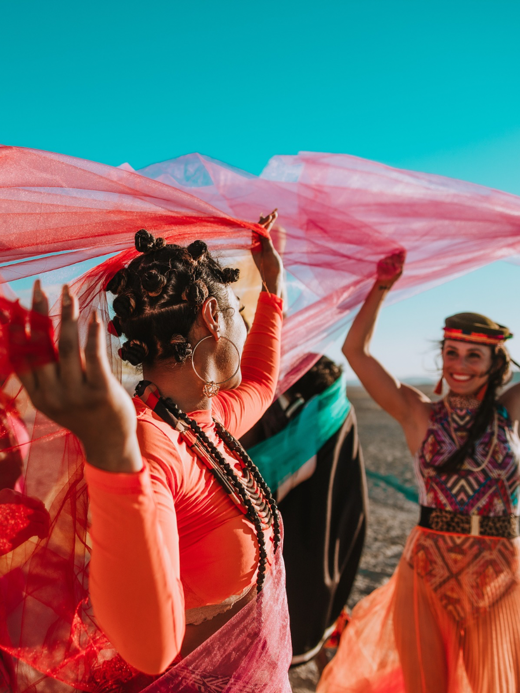

CREATED WITH INTENTION. CURATED WITH STYLE.
Curated by KK is a creative content and event management brand built around intentional design, meaningful storytelling, and unforgettable experiences. Every detail is thoughtfully selected to help brands, businesses, and individuals bring their vision to life with purpose.

Meet Curated by KK
Curated by KK was created for people who have a vision but need support turning that vision into something clear, beautiful, and memorable. The brand blends creativity, organization, and storytelling to create content, events, and brand experiences that feel personal and polished.
From styled visuals to curated gatherings, every project is approached with care and intention. The goal is not just to make something look good, but to create moments that feel aligned, authentic, and meaningful.
Whether you are launching a brand, planning a celebration, building content, or creating an experience for your audience, Curated by KK helps shape the details from concept to creation.
Bringing Vision to Life Through Details
The mission behind Curated by KK is to make creativity feel intentional. Every color, visual, setup, caption, mood, and moment should connect back to the bigger story being told.
Curated by KK believes that strong creative work is more than decoration. It is about building an experience that communicates who you are, what you represent, and how you want people to feel when they interact with your brand or event.
What We Value
Intentionality
Every detail has a purpose. From the visuals to the flow of an event, each element is chosen to support the bigger vision.
Creativity
We believe creative work should feel expressive, fresh, and personal. Each project is designed to reflect the unique style of the client.
Authenticity
The best experiences feel real. Curated by KK focuses on creating work that reflects the true personality of each brand, business, or individual.
LET'S CREATE!
If you have an idea, a vision, or a moment you want to bring to life, Curated by KK is here to help make it intentional, elevated, and unforgettable.
BOOK NOW